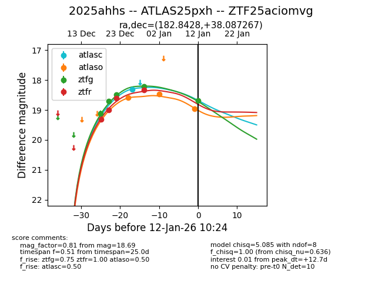
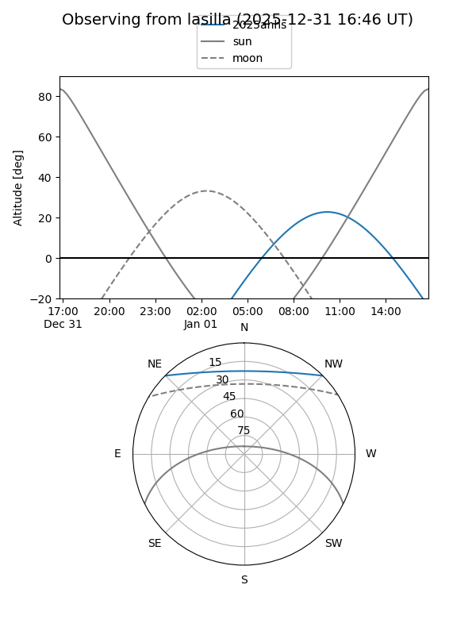
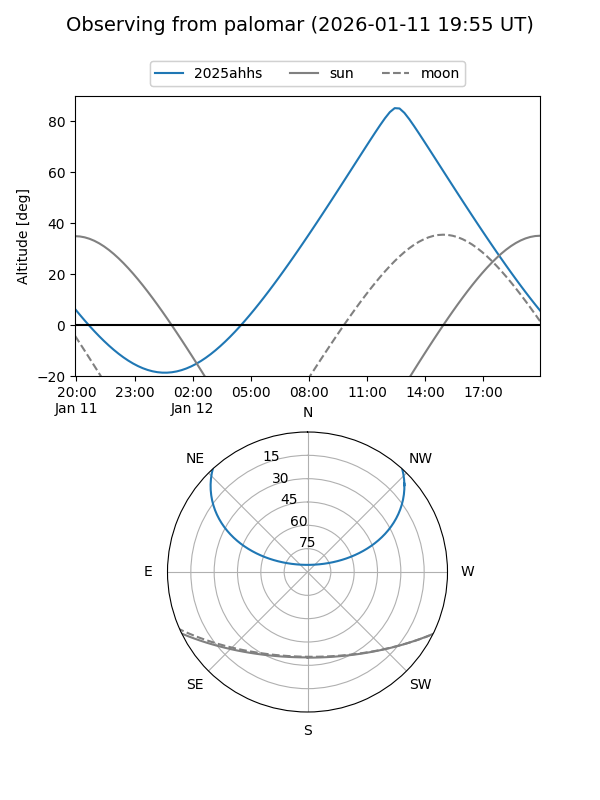
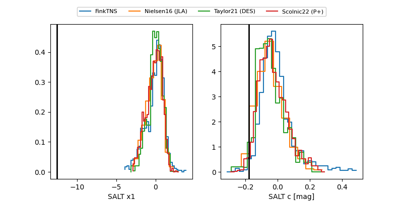

2025ahhs
Target 2025ahhs at 2025-12-22 21:21
Aliases and brokers:
FINK: fink-portal.org/ZTF25aciomvg
Lasair: lasair-ztf.lsst.ac.uk/objects/ZTF25aciomvg
ALeRCE: alerce.online/object/ZTF25aciomvg
TNS: wis-tns.org/object/2025ahhs
YSE: ziggy.ucolick.org/yse/transient_detail/2025ahhs
alt names
ZTF25aciomvg (ztf,fink_ztf)
2025ahhs (tns,yse)
ATLAS25pxh (atlas)
Coordinates:
equatorial (ra, dec) = 182.8428,+38.08727
equatorial (HMS+DMS) = 12:11:22.26,+38:05:14.16
galactic (l, b) = (157.9231,+76.18840)
Flags:
confirmed ia
Photometry:
last ztfg=18.50, ztfr=18.61
3 ztfg, 3 ztfr detections
Lightcurve

Visibility


Additional plots
